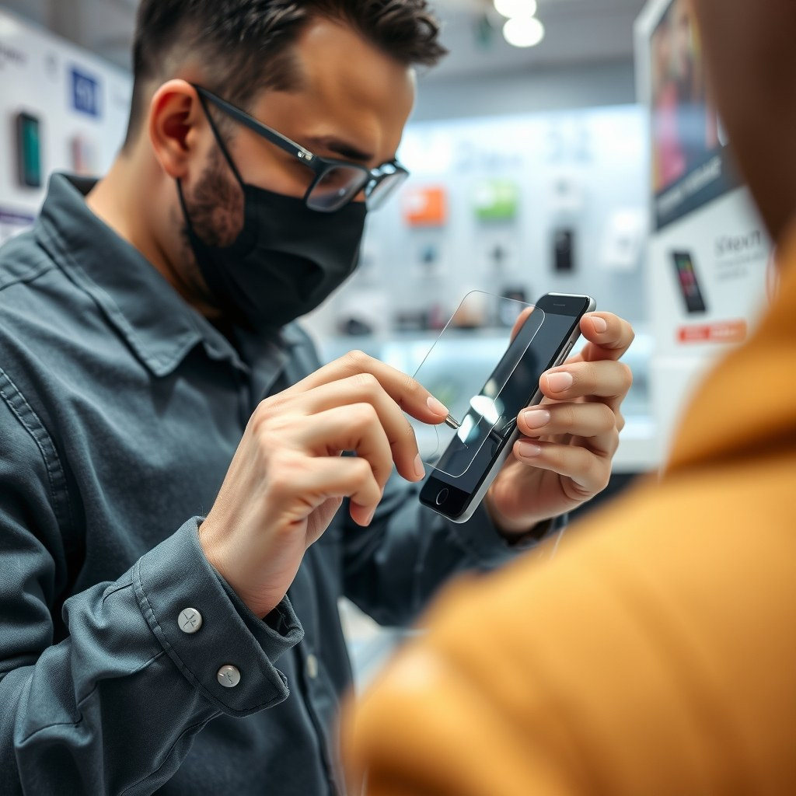

Keluhan pedagang eceran dan musiman yang sepi pembeli karena kalah saing dengan toko online bukan lagi cerita baru. Fenomena ini terasa nyata di berbagai daerah, seperti para pedagang pernak-pernik yang mendapati omzetnya anjlok drastis karena pembeli memilih memesan barang murah di lokapasar (marketplace). Namun, menutup toko atau memaksakan diri memotong harga sampai rugi bukanlah strategi bisnis yang sehat.
Jika kamu mengelola toko kelontong, lapak pakaian, bengkel suku cadang, atau toko elektronik eceran, medan pertempuranmu bukan di angka termurah. Artikel ini mengupas tuntas cara membalikkan keadaan menggunakan prinsip penawaran bernilai tinggi.
1. Apa Itu Penawaran Berbasis Nilai untuk Toko Fisik?
Penawaran berbasis nilai adalah strategi menjual paket solusi lengkap, bukan sekadar memajang barang mentah yang mudah dicari padanannya di internet. Ketika barang yang kamu jual sama persis dengan yang ada di aplikasi ponsel pembeli tanpa ada nilai tambah sedikit pun, produkmu otomatis berubah menjadi komoditas. Pembeli tidak punya alasan memilih lapakmu selain faktor harga.
Alex Hormozi dalam bukunya $100M Offers menjelaskan bahwa menjual komoditas yang bersaing murni pada harga akan memicu perang harga sampai margin habis. Sebaliknya, penawaran bernilai tinggi (Grand Slam Offer) menggabungkan produk dengan kemudahan, kecepatan, dan kepastian hasil sehingga pembeli tidak lagi membandingkannya dengan barang eceran toko sebelah.
Bayangkan kamu kehabisan gas elpiji saat sedang memasak makan malam untuk keluarga. Meskipun ada toko online yang menjual tabung gas lebih murah Rp5.000 dengan sistem preorder, kamu tetap memilih membeli di pangkalan dekat rumah. Kamu membayar lebih demi kepastian bahwa kompor bisa menyala sepuluh menit kemudian. Toko fisik menang mutlak pada dimensi waktu dan kepastian langsung.
2. Kenapa Perang Harga Melawan Marketplace Pasti Kalah?
Banyak pemilik usaha eceran terjebak dalam keputusasaan saat melihat selisih harga barang di toko online. Namun, memaksakan diri menurunkan harga jual sampai menyentuh batas modal modal kulakan adalah kekeliruan fatal. Toko fisik memiliki struktur pengeluaran yang berbeda: sewa tempat, listrik harian, tenaga kerja langsung, dan volume perputaran barang yang lebih kecil dibanding distributor grosir nasional.
Distributor di lokapasar sering kali menjual ribuan unit per hari langsung dari pabrik dengan margin keuntungan sangat tipis per barang. Jika kamu yang hanya menjual puluhan unit per hari mencoba mematok harga serupa, arus kas usahamu akan hancur sebelum barang habis terjual. Toko fisik membutuhkan margin yang cukup sehat untuk menjaga kelangsungan hidup operasional.
Pembeli yang hanya peduli pada harga paling murah dan rela menunggu 3 hari pengiriman memang bukan target pasarmu. Memaksa melayani kelompok pembeli ini dengan mengorbankan margin hanya akan menghabiskan energimu tanpa menghasilkan profit yang cukup untuk membayar biaya toko.
3. Langkah Praktis Menyusun Penawaran yang Tidak Bisa Ditiru Toko Online
Untuk melepaskan toko fisikmu dari bayang-bayang harga lokapasar, kamu perlu membangun keunggulan di area yang tidak dapat dijangkau oleh algoritma digital. Kita bisa menggabungkan teknik Concentration dari Eugene M. Schwartz dalam Breakthrough Advertising dengan perancangan nilai tambah. Schwartz menekankan pentingnya mengarahkan perhatian calon pembeli pada kelemahan nyata dari opsi lain demi keselamatan pembeli itu sendiri.
Berikut adalah 4 langkah terstruktur yang bisa kamu terapkan di tokomu mulai hari ini:
Petakan Celah Belanja Online pada Produkmu
Tuliskan semua ketidaknyamanan yang dialami pembeli saat membeli produkmu lewat aplikasi online. Masalah umum meliputi: waktu pengiriman 2-4 hari, risiko ukuran baju tidak pas, bahaya barang pecah saat transit ekspedisi, ongkos kirim tambahan, hingga kerepotan mengajukan pengembalian (return) jika barang rusak.
Rancang Bundel Layanan Fisik Instan
Gabungkan produk utama dengan layanan yang hanya bisa diberikan secara langsung. Misalnya, jika menjual onderdil motor, sediakan jasa pasang langsung di tempat. Jika menjual baju, sediakan ruang coba dengan jaminan tukar ukuran detik itu juga tanpa perlu mengisi formulir komplain berhari-hari.
Ubah Komunikasi Visual di Tempat Jualan
Turunkan spanduk usang yang bertuliskan 'Jual Harga Paling Murah'. Ganti dengan papan informasi yang menonjolkan kepastian: 'Boleh Dicoba Dulu', 'Langsung Bawa Pulang Siap Pakai', atau 'Garansi Rusak Ganti Unit Baru Hari Ini Juga'. Pesan ini menjawab kekhawatiran terbesar pembeli modern.
Gunakan Komunikasi Perbandingan yang Jujur
Saat calon pembeli membandingkan harga tokomu dengan aplikasi online, jangan marah atau menjelek-jelekkan toko online secara emosional. Jelaskan perbedaannya secara objektif: tunjukkan bahwa selisih harga Rp15.000 di tokomu sudah mencakup kepastian barang original, pengetesan langsung di depan mata, dan ketiadaan risiko paket hilang di jalan.
Penerapan langkah-langkah di atas adalah bagian inti dari ilmu jualan praktis yang memisahkan pedagang reaktif dari pengusaha yang paham struktur penawaran.
4. Contoh Kasus Nyata: Toko Aksesori Gadget Eceran vs Marketplace

Mari kita bedah satu contoh simulasi pada toko aksesori ponsel eceran bernama Konter Berkah. Konter ini awalnya hampir gulung tikar karena kaca pelindung layar (tempered glass) di toko online dijual seharga Rp25.000, sementara Konter Berkah menjualnya Rp50.000.
Alih-alih menurunkan harga menjadi Rp25.000 dan merugi, pemilik toko merombak total struktur penawarannya menjadi paket nilai:
| Unsur Transaksi | Toko Online Murah | Konter Fisik Berbasis Nilai |
|---|---|---|
| Harga Pembelian | Rp25.000 + Ongkir Rp10.000 | Rp50.000 (Paket Bersih) |
| Waktu Diterima | 2 sampai 4 hari kerja | 5 menit langsung selesai |
| Pemasangan | Pasang sendiri (risiko gelembung debu) | Dipasangkan teknisi sampai mulus |
| Jaminan Gagal | Harus video unboxing, retur bayar ongkir | Pecah saat pasang langsung diganti baru |
Ketika ada pengunjung yang ragu dan berkata, "Di online cuma dua puluh lima ribu lho, Mas," pelayan konter menjawab dengan tenang menggunakan teknik perbandingan objektif:
"Betul Kak, di online memang murah. Tapi kalau beli online Kakak harus tunggu tiga hari, bayar ongkir, dan harus pasang sendiri. Kalau kemasukan debu atau miring, uangnya hangus. Di sini lima puluh ribu sudah termasuk biaya pasang rapi oleh kami. Kalau kami pasang ada gelembung, kami ganti unit baru gratis sampai mulus."
Hasilnya, sembilan dari sepuluh pembeli memilih membayar Rp50.000 di tempat karena mereka tidak membeli selembar kaca tempered, melainkan membeli layar ponsel yang aman dan mulus saat itu juga.
5. Kesalahan yang Paling Sering Terjadi pada Pedagang Fisik
Banyak pemilik toko fisik terjebak dalam respons emosional saat omzet mereka mulai tergerus. Kenali kekeliruan berikut agar tokomu tidak mengulanginya:
- Banting harga tanpa perhitungan margin: Menjual barang dengan selisih keuntungan tipis demi mencocokkan harga grosir online hanya akan mempercepat kehabisan kas operasional toko.
- Menjelekkan toko online dengan nada emosi: Mengatakan bahwa toko online selalu penipu akan membuat pembeli menganggapmu defensif dan tidak profesional. Gunakan pendekatan komparasi fakta yang logis.
- Memperlakukan toko hanya sebagai gudang pajangan: Jika penjaga toko hanya duduk diam menunggu pembeli mengambil barang dari rak tanpa ada konsultasi atau bantuan ramah, toko fisik kehilangan seluruh keunggulan personalnya.
- Menolak melayani pelanggan yang banyak bertanya: Toko online tidak memiliki kemampuan berbincang hangat secara langsung. Kehangatan interaksi manusia adalah salah satu aset terbesar toko offline yang sulit digantikan teknologi.
Memahami dinamika interaksi pembeli juga erat kaitannya dengan bagaimana pelaku usaha menyusun alur penawaran yang meyakinkan, baik di toko nyata maupun saat membuat penawaran digital.
6. Cara Menguji Kesiapan Strategi Toko Fisikmu
Sebelum membuka pintu toko besok pagi, berhentilah sejenak dan evaluasi kesiapan usahamu dengan menjawab tiga pertanyaan mendasar ini menggunakan sudut pandang pembeli:
- Mengapa seseorang harus membayar lebih mahal di tokomu hari ini daripada memesan online sambil rebahan di rumah? Jika jawabanmu hanya "karena barang saya asli", itu belum cukup kuat karena di toko online resmi pun ada barang serupa. Tambahkan unsur kepastian langsung dan kenyamanan penanganan instan.
- Apakah ada nilai kenyamanan fisik yang sudah kamu paketkan ke dalam harga produk? Pastikan ada unsur pendamping, seperti pengetesan barang di tempat, garansi tukar langsung tanpa antre kurir, atau panduan pemasangan.
- Bagaimana respon tokomu saat ada pelanggan yang menunjukkan harga ponsel lebih murah? Pastikan seluruh staf toko telah menguasai kalimat perbandingan objektif tanpa nada meremehkan.
Polanya selalu sama: sistem penawaran yang lengkap akan selalu mengalahkan produk mentah yang telanjang. Langkah pertama yang bisa kamu lakukan hari ini adalah memilih satu produk terlaris di tokomu, cari tahu apa risiko belanja online untuk produk tersebut, lalu buatlah paket layanan fisik yang langsung menyelesaikan risiko itu di tempat.
Sumber
- Pedagang Musiman di Jayapura Mengeluh Atribut Merah Putih Sepi Pembeli — Spektroom · 14 Agu 2026, 10:30 WIB